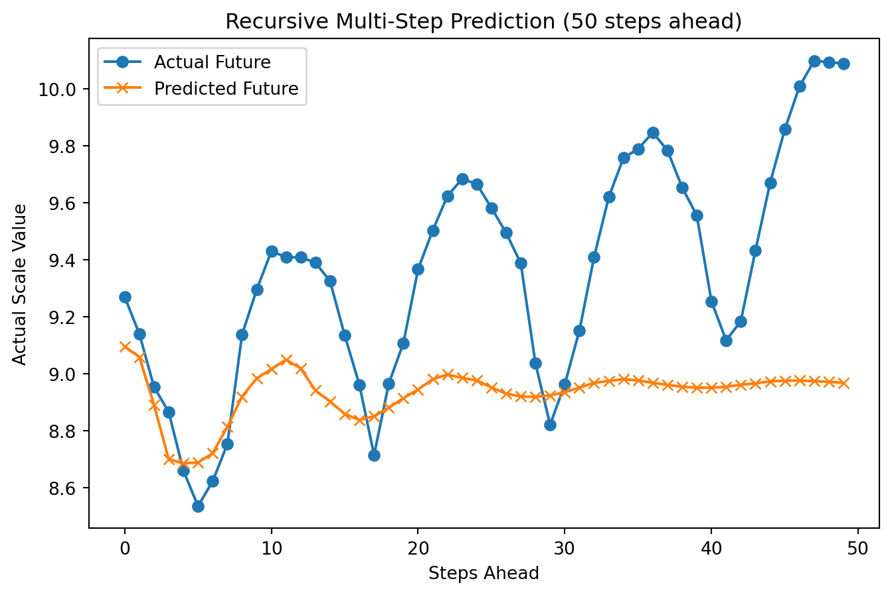
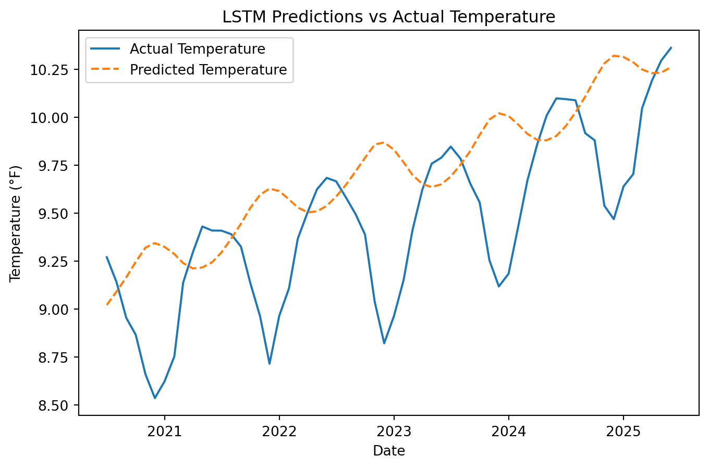
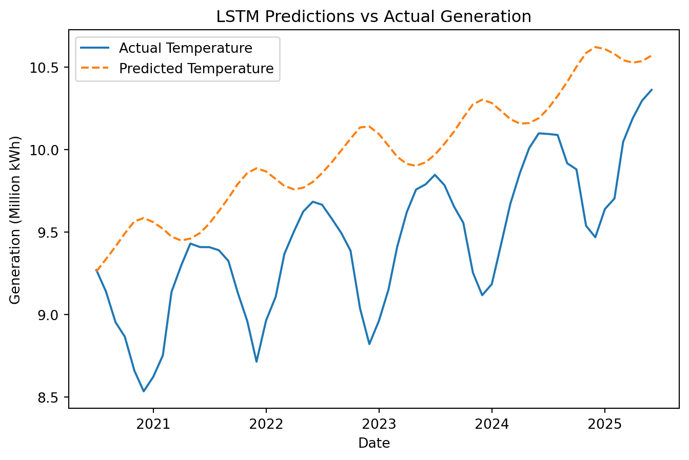

<!DOCTYPE html>
<html xmlns="http://www.w3.org/1999/xhtml" lang="en" xml:lang="en"><head>

<meta charset="utf-8">
<meta name="generator" content="quarto-1.8.21">

<meta name="viewport" content="width=device-width, initial-scale=1.0, user-scalable=yes">


<title>Deep Learning for Time Series</title>
<style>
code{white-space: pre-wrap;}
span.smallcaps{font-variant: small-caps;}
div.columns{display: flex; gap: min(4vw, 1.5em);}
div.column{flex: auto; overflow-x: auto;}
div.hanging-indent{margin-left: 1.5em; text-indent: -1.5em;}
ul.task-list{list-style: none;}
ul.task-list li input[type="checkbox"] {
  width: 0.8em;
  margin: 0 0.8em 0.2em -1em; /* quarto-specific, see https://github.com/quarto-dev/quarto-cli/issues/4556 */ 
  vertical-align: middle;
}
/* CSS for syntax highlighting */
html { -webkit-text-size-adjust: 100%; }
pre > code.sourceCode { white-space: pre; position: relative; }
pre > code.sourceCode > span { display: inline-block; line-height: 1.25; }
pre > code.sourceCode > span:empty { height: 1.2em; }
.sourceCode { overflow: visible; }
code.sourceCode > span { color: inherit; text-decoration: inherit; }
div.sourceCode { margin: 1em 0; }
pre.sourceCode { margin: 0; }
@media screen {
div.sourceCode { overflow: auto; }
}
@media print {
pre > code.sourceCode { white-space: pre-wrap; }
pre > code.sourceCode > span { text-indent: -5em; padding-left: 5em; }
}
pre.numberSource code
  { counter-reset: source-line 0; }
pre.numberSource code > span
  { position: relative; left: -4em; counter-increment: source-line; }
pre.numberSource code > span > a:first-child::before
  { content: counter(source-line);
    position: relative; left: -1em; text-align: right; vertical-align: baseline;
    border: none; display: inline-block;
    -webkit-touch-callout: none; -webkit-user-select: none;
    -khtml-user-select: none; -moz-user-select: none;
    -ms-user-select: none; user-select: none;
    padding: 0 4px; width: 4em;
  }
pre.numberSource { margin-left: 3em;  padding-left: 4px; }
div.sourceCode
  {   }
@media screen {
pre > code.sourceCode > span > a:first-child::before { text-decoration: underline; }
}
</style>


<script src="https://cdn.jsdelivr.net/npm/jquery@3.5.1/dist/jquery.min.js" integrity="sha384-ZvpUoO/+PpLXR1lu4jmpXWu80pZlYUAfxl5NsBMWOEPSjUn/6Z/hRTt8+pR6L4N2" crossorigin="anonymous"></script><script src="site_libs/quarto-nav/quarto-nav.js"></script>
<script src="site_libs/quarto-nav/headroom.min.js"></script>
<script src="site_libs/clipboard/clipboard.min.js"></script>
<script src="site_libs/quarto-search/autocomplete.umd.js"></script>
<script src="site_libs/quarto-search/fuse.min.js"></script>
<script src="site_libs/quarto-search/quarto-search.js"></script>
<meta name="quarto:offset" content="./">
<link href="./assets/gu-logo.png" rel="icon" type="image/png">
<script src="site_libs/quarto-html/quarto.js" type="module"></script>
<script src="site_libs/quarto-html/tabsets/tabsets.js" type="module"></script>
<script src="site_libs/quarto-html/axe/axe-check.js" type="module"></script>
<script src="site_libs/quarto-html/popper.min.js"></script>
<script src="site_libs/quarto-html/tippy.umd.min.js"></script>
<script src="site_libs/quarto-html/anchor.min.js"></script>
<link href="site_libs/quarto-html/tippy.css" rel="stylesheet">
<link href="site_libs/quarto-html/quarto-syntax-highlighting-ea1d7ac60288e0f1efdbc993fd8432ae.css" rel="stylesheet" id="quarto-text-highlighting-styles">
<script src="site_libs/bootstrap/bootstrap.min.js"></script>
<link href="site_libs/bootstrap/bootstrap-icons.css" rel="stylesheet">
<link href="site_libs/bootstrap/bootstrap-870b6070356b2f6ba798b4fc2bd491a6.min.css" rel="stylesheet" append-hash="true" id="quarto-bootstrap" data-mode="light">
<script id="quarto-search-options" type="application/json">{
  "location": "navbar",
  "copy-button": false,
  "collapse-after": 3,
  "panel-placement": "end",
  "type": "overlay",
  "limit": 50,
  "keyboard-shortcut": [
    "f",
    "/",
    "s"
  ],
  "show-item-context": false,
  "language": {
    "search-no-results-text": "No results",
    "search-matching-documents-text": "matching documents",
    "search-copy-link-title": "Copy link to search",
    "search-hide-matches-text": "Hide additional matches",
    "search-more-match-text": "more match in this document",
    "search-more-matches-text": "more matches in this document",
    "search-clear-button-title": "Clear",
    "search-text-placeholder": "",
    "search-detached-cancel-button-title": "Cancel",
    "search-submit-button-title": "Submit",
    "search-label": "Search"
  }
}</script>
<script src="https://cdn.jsdelivr.net/npm/requirejs@2.3.6/require.min.js" integrity="sha384-c9c+LnTbwQ3aujuU7ULEPVvgLs+Fn6fJUvIGTsuu1ZcCf11fiEubah0ttpca4ntM sha384-6V1/AdqZRWk1KAlWbKBlGhN7VG4iE/yAZcO6NZPMF8od0vukrvr0tg4qY6NSrItx" crossorigin="anonymous"></script>

<script type="application/javascript">define('jquery', [],function() {return window.jQuery;})</script>


</head>

<body class="nav-fixed quarto-light">

<div id="quarto-search-results"></div>
  <header id="quarto-header" class="headroom fixed-top">
    <nav class="navbar navbar-expand-lg " data-bs-theme="dark">
      <div class="navbar-container container-fluid">
      <div class="navbar-brand-container mx-auto">
    <a href="./index.html" class="navbar-brand navbar-brand-logo">
    </a>
  </div>
            <div id="quarto-search" class="" title="Search"></div>
          <button class="navbar-toggler" type="button" data-bs-toggle="collapse" data-bs-target="#navbarCollapse" aria-controls="navbarCollapse" role="menu" aria-expanded="false" aria-label="Toggle navigation" onclick="if (window.quartoToggleHeadroom) { window.quartoToggleHeadroom(); }">
  <span class="navbar-toggler-icon"></span>
</button>
          <div class="collapse navbar-collapse" id="navbarCollapse">
            <ul class="navbar-nav navbar-nav-scroll me-auto">
  <li class="nav-item">
    <a class="nav-link" href="./index.html"> 
<span class="menu-text">Home</span></a>
  </li>  
  <li class="nav-item">
    <a class="nav-link" href="./about.html"> 
<span class="menu-text">About me</span></a>
  </li>  
  <li class="nav-item">
    <a class="nav-link" href="./introduction.html"> 
<span class="menu-text">Introduction</span></a>
  </li>  
  <li class="nav-item">
    <a class="nav-link" href="./source.html"> 
<span class="menu-text">Data Sources</span></a>
  </li>  
  <li class="nav-item">
    <a class="nav-link" href="./visualization.html"> 
<span class="menu-text">Data Visualization</span></a>
  </li>  
  <li class="nav-item">
    <a class="nav-link" href="./EDA.html"> 
<span class="menu-text">Exploratory Data Analysis</span></a>
  </li>  
  <li class="nav-item">
    <a class="nav-link" href="./univariate.html"> 
<span class="menu-text">Univariate TS Models (ARIMA/SARIMA)</span></a>
  </li>  
  <li class="nav-item">
    <a class="nav-link" href="./multivariate.html"> 
<span class="menu-text">Multivariate TS Models (ARIMAX/SARIMAX/VAR)</span></a>
  </li>  
  <li class="nav-item">
    <a class="nav-link" href="./financial.html"> 
<span class="menu-text">Financial Time Series Models (ARCH/GARCH)</span></a>
  </li>  
  <li class="nav-item">
    <a class="nav-link active" href="./DL.html" aria-current="page"> 
<span class="menu-text">Deep Learning for TS</span></a>
  </li>  
  <li class="nav-item">
    <a class="nav-link" href="./other.html"> 
<span class="menu-text">Other-Interrupted TS/ARFIMA/Spectral Analysis</span></a>
  </li>  
  <li class="nav-item">
    <a class="nav-link" href="./conclusion.html"> 
<span class="menu-text">Conclusions</span></a>
  </li>  
</ul>
          </div> <!-- /navcollapse -->
            <div class="quarto-navbar-tools">
</div>
      </div> <!-- /container-fluid -->
    </nav>
</header>
<!-- content -->
<div id="quarto-content" class="quarto-container page-columns page-rows-contents page-layout-article page-navbar">
<!-- sidebar -->
<!-- margin-sidebar -->
    <div id="quarto-margin-sidebar" class="sidebar margin-sidebar">
        <nav id="TOC" role="doc-toc" class="toc-active">
    <h2 id="toc-title">On this page</h2>
   
  <ul>
  <li><a href="#univariate-deep-learning-forecasting" id="toc-univariate-deep-learning-forecasting" class="nav-link active" data-scroll-target="#univariate-deep-learning-forecasting">Univariate Deep Learning Forecasting</a></li>
  <li><a href="#forecasting-performance-reflection" id="toc-forecasting-performance-reflection" class="nav-link" data-scroll-target="#forecasting-performance-reflection">Forecasting Performance Reflection</a></li>
  <li><a href="#multivariate-forecasting" id="toc-multivariate-forecasting" class="nav-link" data-scroll-target="#multivariate-forecasting">Multivariate Forecasting</a></li>
  <li><a href="#model-comparison" id="toc-model-comparison" class="nav-link" data-scroll-target="#model-comparison">Model Comparison</a></li>
  </ul>
</nav>
    </div>
<!-- main -->
<main class="content" id="quarto-document-content">

<header id="title-block-header" class="quarto-title-block default">
<div class="quarto-title">
<h1 class="title">Deep Learning for Time Series</h1>
</div>


<div class="quarto-title-meta">

    
  
    
  </div>
  


</header>


<p>This section evaluates the forecasting performance of the deep learning models applied to the energy time series. By comparing training and validation results using metrics such as MSE and RMSE, along with parity plots and predicted trajectories, we assess how well each model captures underlying patterns and generalizes to unseen data. The analysis highlights the strengths and limitations of different architectures and provides insight into their suitability for forecasting long-term energy trends.</p>
<section id="univariate-deep-learning-forecasting" class="level2">
<h2 class="anchored" data-anchor-id="univariate-deep-learning-forecasting">Univariate Deep Learning Forecasting</h2>
<div class="tabset-margin-container"></div><div class="panel-tabset">
<ul class="nav nav-tabs" role="tablist"><li class="nav-item" role="presentation"><a class="nav-link active" id="tabset-1-1-tab" data-bs-toggle="tab" data-bs-target="#tabset-1-1" role="tab" aria-controls="tabset-1-1" aria-selected="true">RNN</a></li><li class="nav-item" role="presentation"><a class="nav-link" id="tabset-1-2-tab" data-bs-toggle="tab" data-bs-target="#tabset-1-2" role="tab" aria-controls="tabset-1-2" aria-selected="false">LSTM</a></li><li class="nav-item" role="presentation"><a class="nav-link" id="tabset-1-3-tab" data-bs-toggle="tab" data-bs-target="#tabset-1-3" role="tab" aria-controls="tabset-1-3" aria-selected="false">GRU</a></li></ul>
<div class="tab-content">
<div id="tabset-1-1" class="tab-pane active" role="tabpanel" aria-labelledby="tabset-1-1-tab">
<div id="6d23f4f7" class="cell" data-execution_count="1">
<details class="code-fold">
<summary>Code</summary>
<div class="code-copy-outer-scaffold"><div class="sourceCode cell-code" id="cb1"><pre class="sourceCode python code-with-copy"><code class="sourceCode python"><span id="cb1-1"><a href="#cb1-1" aria-hidden="true" tabindex="-1"></a><span class="co"># Import packages</span></span>
<span id="cb1-2"><a href="#cb1-2" aria-hidden="true" tabindex="-1"></a><span class="im">import</span> numpy <span class="im">as</span> np</span>
<span id="cb1-3"><a href="#cb1-3" aria-hidden="true" tabindex="-1"></a><span class="im">import</span> plotly.express <span class="im">as</span> px</span>
<span id="cb1-4"><a href="#cb1-4" aria-hidden="true" tabindex="-1"></a><span class="im">import</span> statsmodels.api <span class="im">as</span> sm</span>
<span id="cb1-5"><a href="#cb1-5" aria-hidden="true" tabindex="-1"></a><span class="im">from</span> IPython.display <span class="im">import</span> IFrame</span>
<span id="cb1-6"><a href="#cb1-6" aria-hidden="true" tabindex="-1"></a><span class="im">import</span> seaborn <span class="im">as</span> sns</span>
<span id="cb1-7"><a href="#cb1-7" aria-hidden="true" tabindex="-1"></a><span class="im">import</span> pandas <span class="im">as</span> pd</span>
<span id="cb1-8"><a href="#cb1-8" aria-hidden="true" tabindex="-1"></a><span class="im">import</span> plotly.graph_objects <span class="im">as</span> go</span>
<span id="cb1-9"><a href="#cb1-9" aria-hidden="true" tabindex="-1"></a><span class="im">import</span> plotly.io <span class="im">as</span> pio</span>
<span id="cb1-10"><a href="#cb1-10" aria-hidden="true" tabindex="-1"></a><span class="im">from</span> sklearn.metrics <span class="im">import</span> mean_squared_error</span>
<span id="cb1-11"><a href="#cb1-11" aria-hidden="true" tabindex="-1"></a><span class="im">import</span> tensorflow <span class="im">as</span> tf</span>
<span id="cb1-12"><a href="#cb1-12" aria-hidden="true" tabindex="-1"></a><span class="im">from</span> tensorflow.keras.models <span class="im">import</span> Sequential</span>
<span id="cb1-13"><a href="#cb1-13" aria-hidden="true" tabindex="-1"></a><span class="im">from</span> tensorflow.keras.layers <span class="im">import</span> Input, SimpleRNN, LSTM, GRU, Dense</span>
<span id="cb1-14"><a href="#cb1-14" aria-hidden="true" tabindex="-1"></a><span class="im">from</span> sklearn.preprocessing <span class="im">import</span> MinMaxScaler</span>
<span id="cb1-15"><a href="#cb1-15" aria-hidden="true" tabindex="-1"></a><span class="im">import</span> matplotlib.pyplot <span class="im">as</span> plt</span>
<span id="cb1-16"><a href="#cb1-16" aria-hidden="true" tabindex="-1"></a><span class="im">from</span> tensorflow.keras.callbacks <span class="im">import</span> EarlyStopping</span>
<span id="cb1-17"><a href="#cb1-17" aria-hidden="true" tabindex="-1"></a><span class="im">from</span> tensorflow.keras.layers <span class="im">import</span> Dropout</span>
<span id="cb1-18"><a href="#cb1-18" aria-hidden="true" tabindex="-1"></a></span>
<span id="cb1-19"><a href="#cb1-19" aria-hidden="true" tabindex="-1"></a><span class="co"># Set a global seed value</span></span>
<span id="cb1-20"><a href="#cb1-20" aria-hidden="true" tabindex="-1"></a>SEED_VALUE <span class="op">=</span> <span class="dv">42</span></span>
<span id="cb1-21"><a href="#cb1-21" aria-hidden="true" tabindex="-1"></a></span>
<span id="cb1-22"><a href="#cb1-22" aria-hidden="true" tabindex="-1"></a><span class="co"># TensorFlow (for deep learning models)</span></span>
<span id="cb1-23"><a href="#cb1-23" aria-hidden="true" tabindex="-1"></a>tf.random.set_seed(SEED_VALUE)</span>
<span id="cb1-24"><a href="#cb1-24" aria-hidden="true" tabindex="-1"></a></span>
<span id="cb1-25"><a href="#cb1-25" aria-hidden="true" tabindex="-1"></a><span class="co"># Load the data</span></span>
<span id="cb1-26"><a href="#cb1-26" aria-hidden="true" tabindex="-1"></a>df <span class="op">=</span> pd.read_csv(<span class="st">"data/electric.csv"</span>)</span>
<span id="cb1-27"><a href="#cb1-27" aria-hidden="true" tabindex="-1"></a>df[<span class="st">'Description'</span>] <span class="op">=</span> df[<span class="st">'Description'</span>].<span class="bu">str</span>.extract(<span class="vs">r'</span><span class="kw">((</span><span class="fu">?&lt;</span><span class="vs">=From </span><span class="kw">)</span><span class="dv">.</span><span class="op">*?</span><span class="ex">(</span><span class="fu">?=</span><span class="vs">,</span><span class="ex">)</span><span class="kw">)</span><span class="vs">'</span>)</span>
<span id="cb1-28"><a href="#cb1-28" aria-hidden="true" tabindex="-1"></a></span>
<span id="cb1-29"><a href="#cb1-29" aria-hidden="true" tabindex="-1"></a>df[<span class="st">'YYYYMM'</span>] <span class="op">=</span> df[<span class="st">'YYYYMM'</span>].astype(<span class="bu">str</span>)</span>
<span id="cb1-30"><a href="#cb1-30" aria-hidden="true" tabindex="-1"></a>df[<span class="st">'Year'</span>] <span class="op">=</span> df[<span class="st">'YYYYMM'</span>].<span class="bu">str</span>.<span class="bu">slice</span>(<span class="dv">0</span>, <span class="dv">4</span>).astype(<span class="bu">int</span>)</span>
<span id="cb1-31"><a href="#cb1-31" aria-hidden="true" tabindex="-1"></a>df[<span class="st">'Month'</span>] <span class="op">=</span> df[<span class="st">'YYYYMM'</span>].<span class="bu">str</span>.<span class="bu">slice</span>(<span class="dv">4</span>, <span class="dv">6</span>).astype(<span class="bu">int</span>)</span>
<span id="cb1-32"><a href="#cb1-32" aria-hidden="true" tabindex="-1"></a></span>
<span id="cb1-33"><a href="#cb1-33" aria-hidden="true" tabindex="-1"></a>df <span class="op">=</span> df[df[<span class="st">'Month'</span>] <span class="op">&lt;=</span> <span class="dv">12</span>]</span>
<span id="cb1-34"><a href="#cb1-34" aria-hidden="true" tabindex="-1"></a>df <span class="op">=</span> df[df[<span class="st">'Year'</span>] <span class="op">&gt;=</span> <span class="dv">2000</span>]</span>
<span id="cb1-35"><a href="#cb1-35" aria-hidden="true" tabindex="-1"></a></span>
<span id="cb1-36"><a href="#cb1-36" aria-hidden="true" tabindex="-1"></a>df[<span class="st">'Date'</span>] <span class="op">=</span> pd.to_datetime(df[[<span class="st">'Year'</span>, <span class="st">'Month'</span>]].assign(DAY<span class="op">=</span><span class="dv">1</span>))</span>
<span id="cb1-37"><a href="#cb1-37" aria-hidden="true" tabindex="-1"></a></span>
<span id="cb1-38"><a href="#cb1-38" aria-hidden="true" tabindex="-1"></a>solar_df <span class="op">=</span> (</span>
<span id="cb1-39"><a href="#cb1-39" aria-hidden="true" tabindex="-1"></a>    df[df[<span class="st">'Description'</span>] <span class="op">==</span> <span class="st">'Solar'</span>]</span>
<span id="cb1-40"><a href="#cb1-40" aria-hidden="true" tabindex="-1"></a>      .dropna(subset<span class="op">=</span>[<span class="st">'Value'</span>])</span>
<span id="cb1-41"><a href="#cb1-41" aria-hidden="true" tabindex="-1"></a>      .assign(Value<span class="op">=</span><span class="kw">lambda</span> x: pd.to_numeric(x[<span class="st">'Value'</span>], errors<span class="op">=</span><span class="st">'coerce'</span>))</span>
<span id="cb1-42"><a href="#cb1-42" aria-hidden="true" tabindex="-1"></a>      .assign(Value<span class="op">=</span><span class="kw">lambda</span> x: np.log(x[<span class="st">'Value'</span>]))</span>
<span id="cb1-43"><a href="#cb1-43" aria-hidden="true" tabindex="-1"></a>      .sort_values(<span class="st">'Date'</span>)</span>
<span id="cb1-44"><a href="#cb1-44" aria-hidden="true" tabindex="-1"></a>)</span>
<span id="cb1-45"><a href="#cb1-45" aria-hidden="true" tabindex="-1"></a></span>
<span id="cb1-46"><a href="#cb1-46" aria-hidden="true" tabindex="-1"></a>temperature_subset <span class="op">=</span> solar_df.loc[:, [<span class="st">"Date"</span>, <span class="st">"Value"</span>]].copy()</span>
<span id="cb1-47"><a href="#cb1-47" aria-hidden="true" tabindex="-1"></a></span>
<span id="cb1-48"><a href="#cb1-48" aria-hidden="true" tabindex="-1"></a></span>
<span id="cb1-49"><a href="#cb1-49" aria-hidden="true" tabindex="-1"></a><span class="co"># Normalize the TOBS values</span></span>
<span id="cb1-50"><a href="#cb1-50" aria-hidden="true" tabindex="-1"></a>scaler <span class="op">=</span> MinMaxScaler(feature_range<span class="op">=</span>(<span class="dv">0</span>, <span class="dv">1</span>))</span>
<span id="cb1-51"><a href="#cb1-51" aria-hidden="true" tabindex="-1"></a>temperature_subset[<span class="st">"Value"</span>] <span class="op">=</span> scaler.fit_transform(temperature_subset[[<span class="st">"Value"</span>]])</span>
<span id="cb1-52"><a href="#cb1-52" aria-hidden="true" tabindex="-1"></a></span>
<span id="cb1-53"><a href="#cb1-53" aria-hidden="true" tabindex="-1"></a><span class="co"># Function to create sequences for RNN</span></span>
<span id="cb1-54"><a href="#cb1-54" aria-hidden="true" tabindex="-1"></a><span class="kw">def</span> create_sequences(data, seq_length<span class="op">=</span><span class="dv">10</span>):</span>
<span id="cb1-55"><a href="#cb1-55" aria-hidden="true" tabindex="-1"></a>    X, y <span class="op">=</span> [], []</span>
<span id="cb1-56"><a href="#cb1-56" aria-hidden="true" tabindex="-1"></a>    <span class="cf">for</span> i <span class="kw">in</span> <span class="bu">range</span>(<span class="bu">len</span>(data) <span class="op">-</span> seq_length):</span>
<span id="cb1-57"><a href="#cb1-57" aria-hidden="true" tabindex="-1"></a>        X.append(data[i : i <span class="op">+</span> seq_length])</span>
<span id="cb1-58"><a href="#cb1-58" aria-hidden="true" tabindex="-1"></a>        y.append(data[i <span class="op">+</span> seq_length])</span>
<span id="cb1-59"><a href="#cb1-59" aria-hidden="true" tabindex="-1"></a>    <span class="cf">return</span> np.array(X), np.array(y)</span>
<span id="cb1-60"><a href="#cb1-60" aria-hidden="true" tabindex="-1"></a></span>
<span id="cb1-61"><a href="#cb1-61" aria-hidden="true" tabindex="-1"></a>seq_length <span class="op">=</span> <span class="dv">10</span>  <span class="co"># Number of past days to use for prediction</span></span>
<span id="cb1-62"><a href="#cb1-62" aria-hidden="true" tabindex="-1"></a>X, y <span class="op">=</span> create_sequences(temperature_subset[<span class="st">"Value"</span>].values, seq_length)</span>
<span id="cb1-63"><a href="#cb1-63" aria-hidden="true" tabindex="-1"></a></span>
<span id="cb1-64"><a href="#cb1-64" aria-hidden="true" tabindex="-1"></a><span class="co"># Split into training and test sets (80-20 split)</span></span>
<span id="cb1-65"><a href="#cb1-65" aria-hidden="true" tabindex="-1"></a>train_size <span class="op">=</span> <span class="bu">int</span>(<span class="bu">len</span>(X) <span class="op">*</span> <span class="fl">0.8</span>)</span>
<span id="cb1-66"><a href="#cb1-66" aria-hidden="true" tabindex="-1"></a>X_train, X_test <span class="op">=</span> X[:train_size], X[train_size:]</span>
<span id="cb1-67"><a href="#cb1-67" aria-hidden="true" tabindex="-1"></a>y_train, y_test <span class="op">=</span> y[:train_size], y[train_size:]</span>
<span id="cb1-68"><a href="#cb1-68" aria-hidden="true" tabindex="-1"></a></span>
<span id="cb1-69"><a href="#cb1-69" aria-hidden="true" tabindex="-1"></a><span class="co"># Reshape for RNN input (samples, timesteps, features)</span></span>
<span id="cb1-70"><a href="#cb1-70" aria-hidden="true" tabindex="-1"></a>X_train <span class="op">=</span> X_train.reshape((X_train.shape[<span class="dv">0</span>], X_train.shape[<span class="dv">1</span>], <span class="dv">1</span>))</span>
<span id="cb1-71"><a href="#cb1-71" aria-hidden="true" tabindex="-1"></a>X_test <span class="op">=</span> X_test.reshape((X_test.shape[<span class="dv">0</span>], X_test.shape[<span class="dv">1</span>], <span class="dv">1</span>))</span>
<span id="cb1-72"><a href="#cb1-72" aria-hidden="true" tabindex="-1"></a></span>
<span id="cb1-73"><a href="#cb1-73" aria-hidden="true" tabindex="-1"></a><span class="co"># Build the RNN model</span></span>
<span id="cb1-74"><a href="#cb1-74" aria-hidden="true" tabindex="-1"></a>rnn_model <span class="op">=</span> Sequential([</span>
<span id="cb1-75"><a href="#cb1-75" aria-hidden="true" tabindex="-1"></a>    Input(shape<span class="op">=</span>(seq_length, <span class="dv">1</span>)),  <span class="co"># Explicit input layer</span></span>
<span id="cb1-76"><a href="#cb1-76" aria-hidden="true" tabindex="-1"></a>    SimpleRNN(<span class="dv">50</span>, return_sequences<span class="op">=</span><span class="va">True</span>),</span>
<span id="cb1-77"><a href="#cb1-77" aria-hidden="true" tabindex="-1"></a>    Dropout(<span class="fl">0.2</span>),</span>
<span id="cb1-78"><a href="#cb1-78" aria-hidden="true" tabindex="-1"></a>    SimpleRNN(<span class="dv">50</span>, return_sequences<span class="op">=</span><span class="va">False</span>),</span>
<span id="cb1-79"><a href="#cb1-79" aria-hidden="true" tabindex="-1"></a>    Dropout(<span class="fl">0.2</span>),</span>
<span id="cb1-80"><a href="#cb1-80" aria-hidden="true" tabindex="-1"></a>    Dense(<span class="dv">25</span>),</span>
<span id="cb1-81"><a href="#cb1-81" aria-hidden="true" tabindex="-1"></a>    Dense(<span class="dv">1</span>)</span>
<span id="cb1-82"><a href="#cb1-82" aria-hidden="true" tabindex="-1"></a>])</span>
<span id="cb1-83"><a href="#cb1-83" aria-hidden="true" tabindex="-1"></a></span>
<span id="cb1-84"><a href="#cb1-84" aria-hidden="true" tabindex="-1"></a><span class="co"># Compile the model</span></span>
<span id="cb1-85"><a href="#cb1-85" aria-hidden="true" tabindex="-1"></a>rnn_model.<span class="bu">compile</span>(optimizer<span class="op">=</span><span class="st">"adam"</span>, loss<span class="op">=</span><span class="st">"mean_squared_error"</span>)</span>
<span id="cb1-86"><a href="#cb1-86" aria-hidden="true" tabindex="-1"></a></span>
<span id="cb1-87"><a href="#cb1-87" aria-hidden="true" tabindex="-1"></a><span class="co"># Train the model</span></span>
<span id="cb1-88"><a href="#cb1-88" aria-hidden="true" tabindex="-1"></a>history <span class="op">=</span> rnn_model.fit(X_train, y_train, epochs<span class="op">=</span><span class="dv">20</span>, batch_size<span class="op">=</span><span class="dv">16</span>, validation_data<span class="op">=</span>(X_test, y_test),verbose<span class="op">=</span><span class="dv">0</span>)</span>
<span id="cb1-89"><a href="#cb1-89" aria-hidden="true" tabindex="-1"></a></span>
<span id="cb1-90"><a href="#cb1-90" aria-hidden="true" tabindex="-1"></a><span class="co"># Predict</span></span>
<span id="cb1-91"><a href="#cb1-91" aria-hidden="true" tabindex="-1"></a>rnn_predictions <span class="op">=</span> rnn_model.predict(X_test)</span>
<span id="cb1-92"><a href="#cb1-92" aria-hidden="true" tabindex="-1"></a>rnn_predictions <span class="op">=</span> scaler.inverse_transform(rnn_predictions)  <span class="co"># Convert back to original scale</span></span>
<span id="cb1-93"><a href="#cb1-93" aria-hidden="true" tabindex="-1"></a></span>
<span id="cb1-94"><a href="#cb1-94" aria-hidden="true" tabindex="-1"></a><span class="co"># Convert y_test back to original scale</span></span>
<span id="cb1-95"><a href="#cb1-95" aria-hidden="true" tabindex="-1"></a>y_test_actual <span class="op">=</span> scaler.inverse_transform(y_test.reshape(<span class="op">-</span><span class="dv">1</span>, <span class="dv">1</span>))</span>
<span id="cb1-96"><a href="#cb1-96" aria-hidden="true" tabindex="-1"></a></span>
<span id="cb1-97"><a href="#cb1-97" aria-hidden="true" tabindex="-1"></a><span class="co"># Calculate RMSE for RNN</span></span>
<span id="cb1-98"><a href="#cb1-98" aria-hidden="true" tabindex="-1"></a>rnn_rmse <span class="op">=</span> np.sqrt(mean_squared_error(y_test_actual, rnn_predictions))</span>
<span id="cb1-99"><a href="#cb1-99" aria-hidden="true" tabindex="-1"></a></span>
<span id="cb1-100"><a href="#cb1-100" aria-hidden="true" tabindex="-1"></a><span class="co"># Print RMSE</span></span>
<span id="cb1-101"><a href="#cb1-101" aria-hidden="true" tabindex="-1"></a><span class="bu">print</span>(<span class="ss">f"RNN RMSE: </span><span class="sc">{</span>rnn_rmse<span class="sc">:.4f}</span><span class="ss">"</span>)</span>
<span id="cb1-102"><a href="#cb1-102" aria-hidden="true" tabindex="-1"></a></span>
<span id="cb1-103"><a href="#cb1-103" aria-hidden="true" tabindex="-1"></a><span class="co"># Plot predictions vs actual values</span></span>
<span id="cb1-104"><a href="#cb1-104" aria-hidden="true" tabindex="-1"></a>plt.figure(figsize<span class="op">=</span>(<span class="dv">8</span>, <span class="dv">5</span>))</span>
<span id="cb1-105"><a href="#cb1-105" aria-hidden="true" tabindex="-1"></a>plt.plot(temperature_subset[<span class="st">"Date"</span>].values[train_size<span class="op">+</span>seq_length:], y_test_actual, label<span class="op">=</span><span class="st">"Actual Generation"</span>)</span>
<span id="cb1-106"><a href="#cb1-106" aria-hidden="true" tabindex="-1"></a>plt.plot(temperature_subset[<span class="st">"Date"</span>].values[train_size<span class="op">+</span>seq_length:], rnn_predictions, label<span class="op">=</span><span class="st">"Predicted Generation"</span>, linestyle<span class="op">=</span><span class="st">"dashed"</span>)</span>
<span id="cb1-107"><a href="#cb1-107" aria-hidden="true" tabindex="-1"></a>plt.legend()</span>
<span id="cb1-108"><a href="#cb1-108" aria-hidden="true" tabindex="-1"></a>plt.xlabel(<span class="st">"Date"</span>)</span>
<span id="cb1-109"><a href="#cb1-109" aria-hidden="true" tabindex="-1"></a>plt.ylabel(<span class="st">"Generation (Million kWh)"</span>)</span>
<span id="cb1-110"><a href="#cb1-110" aria-hidden="true" tabindex="-1"></a>plt.title(<span class="st">"RNN Predictions vs Actual Generation"</span>)</span>
<span id="cb1-111"><a href="#cb1-111" aria-hidden="true" tabindex="-1"></a>plt.show()</span></code></pre></div><button title="Copy to Clipboard" class="code-copy-button"><i class="bi"></i></button></div>
</details>
<div class="cell-output cell-output-stdout">
<div class="ansi-escaped-output">
<pre><span class="ansi-bold">1/2</span> <span class="ansi-green-fg">━━━━━━━━━━</span><span class="ansi-white-fg">━━━━━━━━━━</span> <span class="ansi-bold">0s</span> 238ms/step

<span class="ansi-bold">2/2</span> <span class="ansi-green-fg">━━━━━━━━━━━━━━━━━━━━</span> <span class="ansi-bold">0s</span> 216ms/step

<span class="ansi-bold">2/2</span> <span class="ansi-green-fg">━━━━━━━━━━━━━━━━━━━━</span> <span class="ansi-bold">0s</span> 239ms/step

RNN RMSE: 0.2536
</pre>
</div>
</div>
<div class="cell-output cell-output-display">
<div>
<figure class="figure">
<p></p>
</figure>
</div>
</div>
</div>
<div id="8e6ec803" class="cell" data-execution_count="2">
<details class="code-fold">
<summary>Code</summary>
<div class="code-copy-outer-scaffold"><div class="sourceCode cell-code" id="cb2"><pre class="sourceCode python code-with-copy"><code class="sourceCode python"><span id="cb2-1"><a href="#cb2-1" aria-hidden="true" tabindex="-1"></a><span class="kw">def</span> recursive_multi_step_forecast(model, initial_sequence, steps):</span>
<span id="cb2-2"><a href="#cb2-2" aria-hidden="true" tabindex="-1"></a>    <span class="co">"""</span></span>
<span id="cb2-3"><a href="#cb2-3" aria-hidden="true" tabindex="-1"></a><span class="co">    Recursive multi-step forecasting.</span></span>
<span id="cb2-4"><a href="#cb2-4" aria-hidden="true" tabindex="-1"></a><span class="co">    model: trained RNN model</span></span>
<span id="cb2-5"><a href="#cb2-5" aria-hidden="true" tabindex="-1"></a><span class="co">    initial_sequence: the last known seq_length observations (shape: [seq_length, 1])</span></span>
<span id="cb2-6"><a href="#cb2-6" aria-hidden="true" tabindex="-1"></a><span class="co">    steps: how many future steps to predict</span></span>
<span id="cb2-7"><a href="#cb2-7" aria-hidden="true" tabindex="-1"></a><span class="co">    """</span></span>
<span id="cb2-8"><a href="#cb2-8" aria-hidden="true" tabindex="-1"></a>    seq <span class="op">=</span> initial_sequence.reshape(<span class="dv">1</span>, <span class="op">-</span><span class="dv">1</span>, <span class="dv">1</span>)  <span class="co"># (1, seq_length, 1)</span></span>
<span id="cb2-9"><a href="#cb2-9" aria-hidden="true" tabindex="-1"></a>    predictions <span class="op">=</span> []</span>
<span id="cb2-10"><a href="#cb2-10" aria-hidden="true" tabindex="-1"></a></span>
<span id="cb2-11"><a href="#cb2-11" aria-hidden="true" tabindex="-1"></a>    <span class="cf">for</span> _ <span class="kw">in</span> <span class="bu">range</span>(steps):</span>
<span id="cb2-12"><a href="#cb2-12" aria-hidden="true" tabindex="-1"></a>        <span class="co"># Predict next step</span></span>
<span id="cb2-13"><a href="#cb2-13" aria-hidden="true" tabindex="-1"></a>        pred <span class="op">=</span> model.predict(seq, verbose<span class="op">=</span><span class="dv">0</span>)[<span class="dv">0</span>][<span class="dv">0</span>]</span>
<span id="cb2-14"><a href="#cb2-14" aria-hidden="true" tabindex="-1"></a>        predictions.append(pred)</span>
<span id="cb2-15"><a href="#cb2-15" aria-hidden="true" tabindex="-1"></a></span>
<span id="cb2-16"><a href="#cb2-16" aria-hidden="true" tabindex="-1"></a>        <span class="co"># Slide window: remove first value, append prediction</span></span>
<span id="cb2-17"><a href="#cb2-17" aria-hidden="true" tabindex="-1"></a>        new_seq <span class="op">=</span> np.append(seq[:, <span class="dv">1</span>:, :], [[[pred]]], axis<span class="op">=</span><span class="dv">1</span>)</span>
<span id="cb2-18"><a href="#cb2-18" aria-hidden="true" tabindex="-1"></a>        seq <span class="op">=</span> new_seq</span>
<span id="cb2-19"><a href="#cb2-19" aria-hidden="true" tabindex="-1"></a></span>
<span id="cb2-20"><a href="#cb2-20" aria-hidden="true" tabindex="-1"></a>    <span class="cf">return</span> np.array(predictions)</span>
<span id="cb2-21"><a href="#cb2-21" aria-hidden="true" tabindex="-1"></a></span>
<span id="cb2-22"><a href="#cb2-22" aria-hidden="true" tabindex="-1"></a></span>
<span id="cb2-23"><a href="#cb2-23" aria-hidden="true" tabindex="-1"></a>future_steps <span class="op">=</span> <span class="dv">50</span> </span>
<span id="cb2-24"><a href="#cb2-24" aria-hidden="true" tabindex="-1"></a>initial_seq <span class="op">=</span> X_test[<span class="dv">0</span>]</span>
<span id="cb2-25"><a href="#cb2-25" aria-hidden="true" tabindex="-1"></a></span>
<span id="cb2-26"><a href="#cb2-26" aria-hidden="true" tabindex="-1"></a>multi_step_predictions <span class="op">=</span> recursive_multi_step_forecast(</span>
<span id="cb2-27"><a href="#cb2-27" aria-hidden="true" tabindex="-1"></a>    rnn_model, </span>
<span id="cb2-28"><a href="#cb2-28" aria-hidden="true" tabindex="-1"></a>    initial_seq, </span>
<span id="cb2-29"><a href="#cb2-29" aria-hidden="true" tabindex="-1"></a>    future_steps</span>
<span id="cb2-30"><a href="#cb2-30" aria-hidden="true" tabindex="-1"></a>)</span>
<span id="cb2-31"><a href="#cb2-31" aria-hidden="true" tabindex="-1"></a></span>
<span id="cb2-32"><a href="#cb2-32" aria-hidden="true" tabindex="-1"></a>multi_step_predictions_actual <span class="op">=</span> scaler.inverse_transform(</span>
<span id="cb2-33"><a href="#cb2-33" aria-hidden="true" tabindex="-1"></a>    multi_step_predictions.reshape(<span class="op">-</span><span class="dv">1</span>, <span class="dv">1</span>)</span>
<span id="cb2-34"><a href="#cb2-34" aria-hidden="true" tabindex="-1"></a>)</span>
<span id="cb2-35"><a href="#cb2-35" aria-hidden="true" tabindex="-1"></a></span>
<span id="cb2-36"><a href="#cb2-36" aria-hidden="true" tabindex="-1"></a>plt.figure(figsize<span class="op">=</span>(<span class="dv">8</span>, <span class="dv">5</span>))</span>
<span id="cb2-37"><a href="#cb2-37" aria-hidden="true" tabindex="-1"></a></span>
<span id="cb2-38"><a href="#cb2-38" aria-hidden="true" tabindex="-1"></a>actual_future <span class="op">=</span> y_test[:future_steps]</span>
<span id="cb2-39"><a href="#cb2-39" aria-hidden="true" tabindex="-1"></a>actual_future <span class="op">=</span> scaler.inverse_transform(actual_future.reshape(<span class="op">-</span><span class="dv">1</span>,<span class="dv">1</span>))</span>
<span id="cb2-40"><a href="#cb2-40" aria-hidden="true" tabindex="-1"></a></span>
<span id="cb2-41"><a href="#cb2-41" aria-hidden="true" tabindex="-1"></a>plt.plot(actual_future, label<span class="op">=</span><span class="st">"Actual Future"</span>, marker<span class="op">=</span><span class="st">"o"</span>)</span>
<span id="cb2-42"><a href="#cb2-42" aria-hidden="true" tabindex="-1"></a>plt.plot(multi_step_predictions_actual, label<span class="op">=</span><span class="st">"Predicted Future"</span>, marker<span class="op">=</span><span class="st">"x"</span>)</span>
<span id="cb2-43"><a href="#cb2-43" aria-hidden="true" tabindex="-1"></a></span>
<span id="cb2-44"><a href="#cb2-44" aria-hidden="true" tabindex="-1"></a>plt.title(<span class="ss">f"Recursive Multi-Step Prediction (</span><span class="sc">{</span>future_steps<span class="sc">}</span><span class="ss"> steps ahead)"</span>)</span>
<span id="cb2-45"><a href="#cb2-45" aria-hidden="true" tabindex="-1"></a>plt.xlabel(<span class="st">"Steps Ahead"</span>)</span>
<span id="cb2-46"><a href="#cb2-46" aria-hidden="true" tabindex="-1"></a>plt.ylabel(<span class="st">"Actual Scale Value"</span>)</span>
<span id="cb2-47"><a href="#cb2-47" aria-hidden="true" tabindex="-1"></a>plt.legend()</span>
<span id="cb2-48"><a href="#cb2-48" aria-hidden="true" tabindex="-1"></a>plt.show()</span></code></pre></div><button title="Copy to Clipboard" class="code-copy-button"><i class="bi"></i></button></div>
</details>
<div class="cell-output cell-output-display">
<div>
<figure class="figure">
<p></p>
</figure>
</div>
</div>
</div>
</div>
<div id="tabset-1-2" class="tab-pane" role="tabpanel" aria-labelledby="tabset-1-2-tab">
<div id="c2592a80" class="cell" data-execution_count="3">
<details class="code-fold">
<summary>Code</summary>
<div class="code-copy-outer-scaffold"><div class="sourceCode cell-code" id="cb3"><pre class="sourceCode python code-with-copy"><code class="sourceCode python"><span id="cb3-1"><a href="#cb3-1" aria-hidden="true" tabindex="-1"></a><span class="co"># Build the LSTM model</span></span>
<span id="cb3-2"><a href="#cb3-2" aria-hidden="true" tabindex="-1"></a>model <span class="op">=</span> Sequential([</span>
<span id="cb3-3"><a href="#cb3-3" aria-hidden="true" tabindex="-1"></a>    Input(shape<span class="op">=</span>(seq_length, <span class="dv">1</span>)), </span>
<span id="cb3-4"><a href="#cb3-4" aria-hidden="true" tabindex="-1"></a>    LSTM(<span class="dv">50</span>, return_sequences<span class="op">=</span><span class="va">True</span>),</span>
<span id="cb3-5"><a href="#cb3-5" aria-hidden="true" tabindex="-1"></a>    Dropout(<span class="fl">0.2</span>),</span>
<span id="cb3-6"><a href="#cb3-6" aria-hidden="true" tabindex="-1"></a>    LSTM(<span class="dv">50</span>, return_sequences<span class="op">=</span><span class="va">False</span>),</span>
<span id="cb3-7"><a href="#cb3-7" aria-hidden="true" tabindex="-1"></a>    Dropout(<span class="fl">0.2</span>),</span>
<span id="cb3-8"><a href="#cb3-8" aria-hidden="true" tabindex="-1"></a>    Dense(<span class="dv">25</span>),</span>
<span id="cb3-9"><a href="#cb3-9" aria-hidden="true" tabindex="-1"></a>    Dense(<span class="dv">1</span>)</span>
<span id="cb3-10"><a href="#cb3-10" aria-hidden="true" tabindex="-1"></a>])</span>
<span id="cb3-11"><a href="#cb3-11" aria-hidden="true" tabindex="-1"></a></span>
<span id="cb3-12"><a href="#cb3-12" aria-hidden="true" tabindex="-1"></a><span class="co"># Compile the model</span></span>
<span id="cb3-13"><a href="#cb3-13" aria-hidden="true" tabindex="-1"></a>model.<span class="bu">compile</span>(optimizer<span class="op">=</span><span class="st">"adam"</span>, loss<span class="op">=</span><span class="st">"mean_squared_error"</span>)</span>
<span id="cb3-14"><a href="#cb3-14" aria-hidden="true" tabindex="-1"></a></span>
<span id="cb3-15"><a href="#cb3-15" aria-hidden="true" tabindex="-1"></a><span class="co"># Train the model (suppress output)</span></span>
<span id="cb3-16"><a href="#cb3-16" aria-hidden="true" tabindex="-1"></a>history <span class="op">=</span> model.fit(X_train, y_train, epochs<span class="op">=</span><span class="dv">20</span>, batch_size<span class="op">=</span><span class="dv">16</span>, validation_data<span class="op">=</span>(X_test, y_test), verbose<span class="op">=</span><span class="dv">0</span>)</span>
<span id="cb3-17"><a href="#cb3-17" aria-hidden="true" tabindex="-1"></a></span>
<span id="cb3-18"><a href="#cb3-18" aria-hidden="true" tabindex="-1"></a><span class="co"># Predict (suppress output)</span></span>
<span id="cb3-19"><a href="#cb3-19" aria-hidden="true" tabindex="-1"></a>predictions <span class="op">=</span> model.predict(X_test, verbose<span class="op">=</span><span class="dv">0</span>)  </span>
<span id="cb3-20"><a href="#cb3-20" aria-hidden="true" tabindex="-1"></a>predictions <span class="op">=</span> scaler.inverse_transform(predictions)  <span class="co"># Convert back to original scale</span></span>
<span id="cb3-21"><a href="#cb3-21" aria-hidden="true" tabindex="-1"></a></span>
<span id="cb3-22"><a href="#cb3-22" aria-hidden="true" tabindex="-1"></a><span class="co"># Convert y_test back to original scale</span></span>
<span id="cb3-23"><a href="#cb3-23" aria-hidden="true" tabindex="-1"></a>y_test_actual <span class="op">=</span> scaler.inverse_transform(y_test.reshape(<span class="op">-</span><span class="dv">1</span>, <span class="dv">1</span>))</span>
<span id="cb3-24"><a href="#cb3-24" aria-hidden="true" tabindex="-1"></a></span>
<span id="cb3-25"><a href="#cb3-25" aria-hidden="true" tabindex="-1"></a><span class="co"># Calculate RMSE</span></span>
<span id="cb3-26"><a href="#cb3-26" aria-hidden="true" tabindex="-1"></a>rmse <span class="op">=</span> np.sqrt(mean_squared_error(y_test_actual, predictions))</span>
<span id="cb3-27"><a href="#cb3-27" aria-hidden="true" tabindex="-1"></a></span>
<span id="cb3-28"><a href="#cb3-28" aria-hidden="true" tabindex="-1"></a><span class="co"># Print RMSE</span></span>
<span id="cb3-29"><a href="#cb3-29" aria-hidden="true" tabindex="-1"></a><span class="bu">print</span>(<span class="ss">f"RMSE: </span><span class="sc">{</span>rmse<span class="sc">:.4f}</span><span class="ss">"</span>)</span>
<span id="cb3-30"><a href="#cb3-30" aria-hidden="true" tabindex="-1"></a></span>
<span id="cb3-31"><a href="#cb3-31" aria-hidden="true" tabindex="-1"></a><span class="co"># Plot predictions vs actual values</span></span>
<span id="cb3-32"><a href="#cb3-32" aria-hidden="true" tabindex="-1"></a>plt.figure(figsize<span class="op">=</span>(<span class="dv">8</span>, <span class="dv">5</span>))</span>
<span id="cb3-33"><a href="#cb3-33" aria-hidden="true" tabindex="-1"></a>plt.plot(temperature_subset[<span class="st">"Date"</span>].values[train_size<span class="op">+</span>seq_length:], y_test_actual, label<span class="op">=</span><span class="st">"Actual Temperature"</span>)</span>
<span id="cb3-34"><a href="#cb3-34" aria-hidden="true" tabindex="-1"></a>plt.plot(temperature_subset[<span class="st">"Date"</span>].values[train_size<span class="op">+</span>seq_length:], predictions, label<span class="op">=</span><span class="st">"Predicted Temperature"</span>, linestyle<span class="op">=</span><span class="st">"dashed"</span>)</span>
<span id="cb3-35"><a href="#cb3-35" aria-hidden="true" tabindex="-1"></a>plt.legend()</span>
<span id="cb3-36"><a href="#cb3-36" aria-hidden="true" tabindex="-1"></a>plt.xlabel(<span class="st">"Date"</span>)</span>
<span id="cb3-37"><a href="#cb3-37" aria-hidden="true" tabindex="-1"></a>plt.ylabel(<span class="st">"Temperature (°F)"</span>)</span>
<span id="cb3-38"><a href="#cb3-38" aria-hidden="true" tabindex="-1"></a>plt.title(<span class="st">"LSTM Predictions vs Actual Temperature"</span>)</span>
<span id="cb3-39"><a href="#cb3-39" aria-hidden="true" tabindex="-1"></a>plt.show()</span></code></pre></div><button title="Copy to Clipboard" class="code-copy-button"><i class="bi"></i></button></div>
</details>
<div class="cell-output cell-output-stdout">
<pre><code>RMSE: 0.4556</code></pre>
</div>
<div class="cell-output cell-output-display">
<div>
<figure class="figure">
<p></p>
</figure>
</div>
</div>
</div>
<div id="a7a61a86" class="cell" data-execution_count="4">
<details class="code-fold">
<summary>Code</summary>
<div class="code-copy-outer-scaffold"><div class="sourceCode cell-code" id="cb5"><pre class="sourceCode python code-with-copy"><code class="sourceCode python"><span id="cb5-1"><a href="#cb5-1" aria-hidden="true" tabindex="-1"></a>future_steps <span class="op">=</span> <span class="dv">50</span> </span>
<span id="cb5-2"><a href="#cb5-2" aria-hidden="true" tabindex="-1"></a>initial_seq <span class="op">=</span> X_test[<span class="dv">0</span>]</span>
<span id="cb5-3"><a href="#cb5-3" aria-hidden="true" tabindex="-1"></a></span>
<span id="cb5-4"><a href="#cb5-4" aria-hidden="true" tabindex="-1"></a>multi_step_predictions <span class="op">=</span> recursive_multi_step_forecast(</span>
<span id="cb5-5"><a href="#cb5-5" aria-hidden="true" tabindex="-1"></a>    model, </span>
<span id="cb5-6"><a href="#cb5-6" aria-hidden="true" tabindex="-1"></a>    initial_seq, </span>
<span id="cb5-7"><a href="#cb5-7" aria-hidden="true" tabindex="-1"></a>    future_steps</span>
<span id="cb5-8"><a href="#cb5-8" aria-hidden="true" tabindex="-1"></a>)</span>
<span id="cb5-9"><a href="#cb5-9" aria-hidden="true" tabindex="-1"></a></span>
<span id="cb5-10"><a href="#cb5-10" aria-hidden="true" tabindex="-1"></a>multi_step_predictions_actual <span class="op">=</span> scaler.inverse_transform(</span>
<span id="cb5-11"><a href="#cb5-11" aria-hidden="true" tabindex="-1"></a>    multi_step_predictions.reshape(<span class="op">-</span><span class="dv">1</span>, <span class="dv">1</span>)</span>
<span id="cb5-12"><a href="#cb5-12" aria-hidden="true" tabindex="-1"></a>)</span>
<span id="cb5-13"><a href="#cb5-13" aria-hidden="true" tabindex="-1"></a></span>
<span id="cb5-14"><a href="#cb5-14" aria-hidden="true" tabindex="-1"></a>plt.figure(figsize<span class="op">=</span>(<span class="dv">8</span>, <span class="dv">5</span>))</span>
<span id="cb5-15"><a href="#cb5-15" aria-hidden="true" tabindex="-1"></a></span>
<span id="cb5-16"><a href="#cb5-16" aria-hidden="true" tabindex="-1"></a>actual_future <span class="op">=</span> y_test[:future_steps]</span>
<span id="cb5-17"><a href="#cb5-17" aria-hidden="true" tabindex="-1"></a>actual_future <span class="op">=</span> scaler.inverse_transform(actual_future.reshape(<span class="op">-</span><span class="dv">1</span>,<span class="dv">1</span>))</span>
<span id="cb5-18"><a href="#cb5-18" aria-hidden="true" tabindex="-1"></a></span>
<span id="cb5-19"><a href="#cb5-19" aria-hidden="true" tabindex="-1"></a>plt.plot(actual_future, label<span class="op">=</span><span class="st">"Actual Future"</span>, marker<span class="op">=</span><span class="st">"o"</span>)</span>
<span id="cb5-20"><a href="#cb5-20" aria-hidden="true" tabindex="-1"></a>plt.plot(multi_step_predictions_actual, label<span class="op">=</span><span class="st">"Predicted Future"</span>, marker<span class="op">=</span><span class="st">"x"</span>)</span>
<span id="cb5-21"><a href="#cb5-21" aria-hidden="true" tabindex="-1"></a></span>
<span id="cb5-22"><a href="#cb5-22" aria-hidden="true" tabindex="-1"></a>plt.title(<span class="ss">f"Recursive Multi-Step Prediction (</span><span class="sc">{</span>future_steps<span class="sc">}</span><span class="ss"> steps ahead)"</span>)</span>
<span id="cb5-23"><a href="#cb5-23" aria-hidden="true" tabindex="-1"></a>plt.xlabel(<span class="st">"Steps Ahead"</span>)</span>
<span id="cb5-24"><a href="#cb5-24" aria-hidden="true" tabindex="-1"></a>plt.ylabel(<span class="st">"Actual Scale Value"</span>)</span>
<span id="cb5-25"><a href="#cb5-25" aria-hidden="true" tabindex="-1"></a>plt.legend()</span>
<span id="cb5-26"><a href="#cb5-26" aria-hidden="true" tabindex="-1"></a>plt.show()</span></code></pre></div><button title="Copy to Clipboard" class="code-copy-button"><i class="bi"></i></button></div>
</details>
<div class="cell-output cell-output-display">
<div>
<figure class="figure">
<p></p>
</figure>
</div>
</div>
</div>
</div>
<div id="tabset-1-3" class="tab-pane" role="tabpanel" aria-labelledby="tabset-1-3-tab">
<div id="fa225c4b" class="cell" data-execution_count="5">
<details class="code-fold">
<summary>Code</summary>
<div class="code-copy-outer-scaffold"><div class="sourceCode cell-code" id="cb6"><pre class="sourceCode python code-with-copy"><code class="sourceCode python"><span id="cb6-1"><a href="#cb6-1" aria-hidden="true" tabindex="-1"></a><span class="co"># Build the GRU model</span></span>
<span id="cb6-2"><a href="#cb6-2" aria-hidden="true" tabindex="-1"></a>model <span class="op">=</span> Sequential([</span>
<span id="cb6-3"><a href="#cb6-3" aria-hidden="true" tabindex="-1"></a>    Input(shape<span class="op">=</span>(seq_length, <span class="dv">1</span>)), </span>
<span id="cb6-4"><a href="#cb6-4" aria-hidden="true" tabindex="-1"></a>    GRU(<span class="dv">50</span>, return_sequences<span class="op">=</span><span class="va">True</span>),  <span class="co"># First GRU layer</span></span>
<span id="cb6-5"><a href="#cb6-5" aria-hidden="true" tabindex="-1"></a>    Dropout(<span class="fl">0.2</span>),</span>
<span id="cb6-6"><a href="#cb6-6" aria-hidden="true" tabindex="-1"></a>    GRU(<span class="dv">50</span>, return_sequences<span class="op">=</span><span class="va">False</span>),  <span class="co"># Second GRU layer</span></span>
<span id="cb6-7"><a href="#cb6-7" aria-hidden="true" tabindex="-1"></a>    Dropout(<span class="fl">0.2</span>),</span>
<span id="cb6-8"><a href="#cb6-8" aria-hidden="true" tabindex="-1"></a>    Dense(<span class="dv">25</span>),  <span class="co"># Fully connected layer</span></span>
<span id="cb6-9"><a href="#cb6-9" aria-hidden="true" tabindex="-1"></a>    Dense(<span class="dv">1</span>)  <span class="co"># Output layer</span></span>
<span id="cb6-10"><a href="#cb6-10" aria-hidden="true" tabindex="-1"></a>])</span>
<span id="cb6-11"><a href="#cb6-11" aria-hidden="true" tabindex="-1"></a></span>
<span id="cb6-12"><a href="#cb6-12" aria-hidden="true" tabindex="-1"></a><span class="co"># Compile the model</span></span>
<span id="cb6-13"><a href="#cb6-13" aria-hidden="true" tabindex="-1"></a>model.<span class="bu">compile</span>(optimizer<span class="op">=</span><span class="st">"adam"</span>, loss<span class="op">=</span><span class="st">"mean_squared_error"</span>)</span>
<span id="cb6-14"><a href="#cb6-14" aria-hidden="true" tabindex="-1"></a></span>
<span id="cb6-15"><a href="#cb6-15" aria-hidden="true" tabindex="-1"></a><span class="co"># Train the model</span></span>
<span id="cb6-16"><a href="#cb6-16" aria-hidden="true" tabindex="-1"></a>history <span class="op">=</span> model.fit(X_train, y_train, epochs<span class="op">=</span><span class="dv">20</span>, batch_size<span class="op">=</span><span class="dv">16</span>, validation_data<span class="op">=</span>(X_test, y_test),verbose<span class="op">=</span><span class="dv">0</span>)</span>
<span id="cb6-17"><a href="#cb6-17" aria-hidden="true" tabindex="-1"></a></span>
<span id="cb6-18"><a href="#cb6-18" aria-hidden="true" tabindex="-1"></a><span class="co"># Predict</span></span>
<span id="cb6-19"><a href="#cb6-19" aria-hidden="true" tabindex="-1"></a>predictions <span class="op">=</span> model.predict(X_test,verbose<span class="op">=</span><span class="dv">0</span>)</span>
<span id="cb6-20"><a href="#cb6-20" aria-hidden="true" tabindex="-1"></a>predictions <span class="op">=</span> scaler.inverse_transform(predictions)  <span class="co"># Convert back to original scale</span></span>
<span id="cb6-21"><a href="#cb6-21" aria-hidden="true" tabindex="-1"></a></span>
<span id="cb6-22"><a href="#cb6-22" aria-hidden="true" tabindex="-1"></a><span class="co"># Convert y_test back to original scale</span></span>
<span id="cb6-23"><a href="#cb6-23" aria-hidden="true" tabindex="-1"></a>y_test_actual <span class="op">=</span> scaler.inverse_transform(y_test.reshape(<span class="op">-</span><span class="dv">1</span>, <span class="dv">1</span>))</span>
<span id="cb6-24"><a href="#cb6-24" aria-hidden="true" tabindex="-1"></a></span>
<span id="cb6-25"><a href="#cb6-25" aria-hidden="true" tabindex="-1"></a><span class="co"># Calculate RMSE</span></span>
<span id="cb6-26"><a href="#cb6-26" aria-hidden="true" tabindex="-1"></a>rmse <span class="op">=</span> np.sqrt(mean_squared_error(y_test_actual, predictions))</span>
<span id="cb6-27"><a href="#cb6-27" aria-hidden="true" tabindex="-1"></a></span>
<span id="cb6-28"><a href="#cb6-28" aria-hidden="true" tabindex="-1"></a><span class="co"># Print RMSE</span></span>
<span id="cb6-29"><a href="#cb6-29" aria-hidden="true" tabindex="-1"></a><span class="bu">print</span>(<span class="ss">f"RMSE: </span><span class="sc">{</span>rmse<span class="sc">:.4f}</span><span class="ss">"</span>)</span>
<span id="cb6-30"><a href="#cb6-30" aria-hidden="true" tabindex="-1"></a><span class="co"># Plot predictions vs actual values</span></span>
<span id="cb6-31"><a href="#cb6-31" aria-hidden="true" tabindex="-1"></a></span>
<span id="cb6-32"><a href="#cb6-32" aria-hidden="true" tabindex="-1"></a>plt.figure(figsize<span class="op">=</span>(<span class="dv">8</span>, <span class="dv">5</span>))</span>
<span id="cb6-33"><a href="#cb6-33" aria-hidden="true" tabindex="-1"></a>plt.plot(temperature_subset[<span class="st">"Date"</span>].values[train_size<span class="op">+</span>seq_length:], y_test_actual, label<span class="op">=</span><span class="st">"Actual Temperature"</span>)</span>
<span id="cb6-34"><a href="#cb6-34" aria-hidden="true" tabindex="-1"></a>plt.plot(temperature_subset[<span class="st">"Date"</span>].values[train_size<span class="op">+</span>seq_length:], predictions, label<span class="op">=</span><span class="st">"Predicted Temperature"</span>)</span>
<span id="cb6-35"><a href="#cb6-35" aria-hidden="true" tabindex="-1"></a>plt.legend()</span>
<span id="cb6-36"><a href="#cb6-36" aria-hidden="true" tabindex="-1"></a>plt.xlabel(<span class="st">"Date"</span>)</span>
<span id="cb6-37"><a href="#cb6-37" aria-hidden="true" tabindex="-1"></a>plt.ylabel(<span class="st">"Temperature (°F)"</span>)</span>
<span id="cb6-38"><a href="#cb6-38" aria-hidden="true" tabindex="-1"></a>plt.title(<span class="st">"GRU Predictions vs Actual Temperature"</span>)</span>
<span id="cb6-39"><a href="#cb6-39" aria-hidden="true" tabindex="-1"></a>plt.show()</span></code></pre></div><button title="Copy to Clipboard" class="code-copy-button"><i class="bi"></i></button></div>
</details>
<div class="cell-output cell-output-stdout">
<pre><code>RMSE: 0.3776</code></pre>
</div>
<div class="cell-output cell-output-display">
<div>
<figure class="figure">
<p></p>
</figure>
</div>
</div>
</div>
<div id="1701c57b" class="cell" data-execution_count="6">
<details class="code-fold">
<summary>Code</summary>
<div class="code-copy-outer-scaffold"><div class="sourceCode cell-code" id="cb8"><pre class="sourceCode python code-with-copy"><code class="sourceCode python"><span id="cb8-1"><a href="#cb8-1" aria-hidden="true" tabindex="-1"></a>future_steps <span class="op">=</span> <span class="dv">50</span> </span>
<span id="cb8-2"><a href="#cb8-2" aria-hidden="true" tabindex="-1"></a>initial_seq <span class="op">=</span> X_test[<span class="dv">0</span>]</span>
<span id="cb8-3"><a href="#cb8-3" aria-hidden="true" tabindex="-1"></a></span>
<span id="cb8-4"><a href="#cb8-4" aria-hidden="true" tabindex="-1"></a>multi_step_predictions <span class="op">=</span> recursive_multi_step_forecast(</span>
<span id="cb8-5"><a href="#cb8-5" aria-hidden="true" tabindex="-1"></a>    model, </span>
<span id="cb8-6"><a href="#cb8-6" aria-hidden="true" tabindex="-1"></a>    initial_seq, </span>
<span id="cb8-7"><a href="#cb8-7" aria-hidden="true" tabindex="-1"></a>    future_steps</span>
<span id="cb8-8"><a href="#cb8-8" aria-hidden="true" tabindex="-1"></a>)</span>
<span id="cb8-9"><a href="#cb8-9" aria-hidden="true" tabindex="-1"></a></span>
<span id="cb8-10"><a href="#cb8-10" aria-hidden="true" tabindex="-1"></a>multi_step_predictions_actual <span class="op">=</span> scaler.inverse_transform(</span>
<span id="cb8-11"><a href="#cb8-11" aria-hidden="true" tabindex="-1"></a>    multi_step_predictions.reshape(<span class="op">-</span><span class="dv">1</span>, <span class="dv">1</span>)</span>
<span id="cb8-12"><a href="#cb8-12" aria-hidden="true" tabindex="-1"></a>)</span>
<span id="cb8-13"><a href="#cb8-13" aria-hidden="true" tabindex="-1"></a></span>
<span id="cb8-14"><a href="#cb8-14" aria-hidden="true" tabindex="-1"></a>plt.figure(figsize<span class="op">=</span>(<span class="dv">8</span>, <span class="dv">5</span>))</span>
<span id="cb8-15"><a href="#cb8-15" aria-hidden="true" tabindex="-1"></a></span>
<span id="cb8-16"><a href="#cb8-16" aria-hidden="true" tabindex="-1"></a>actual_future <span class="op">=</span> y_test[:future_steps]</span>
<span id="cb8-17"><a href="#cb8-17" aria-hidden="true" tabindex="-1"></a>actual_future <span class="op">=</span> scaler.inverse_transform(actual_future.reshape(<span class="op">-</span><span class="dv">1</span>,<span class="dv">1</span>))</span>
<span id="cb8-18"><a href="#cb8-18" aria-hidden="true" tabindex="-1"></a></span>
<span id="cb8-19"><a href="#cb8-19" aria-hidden="true" tabindex="-1"></a>plt.plot(actual_future, label<span class="op">=</span><span class="st">"Actual Future"</span>, marker<span class="op">=</span><span class="st">"o"</span>)</span>
<span id="cb8-20"><a href="#cb8-20" aria-hidden="true" tabindex="-1"></a>plt.plot(multi_step_predictions_actual, label<span class="op">=</span><span class="st">"Predicted Future"</span>, marker<span class="op">=</span><span class="st">"x"</span>)</span>
<span id="cb8-21"><a href="#cb8-21" aria-hidden="true" tabindex="-1"></a></span>
<span id="cb8-22"><a href="#cb8-22" aria-hidden="true" tabindex="-1"></a>plt.title(<span class="ss">f"Recursive Multi-Step Prediction (</span><span class="sc">{</span>future_steps<span class="sc">}</span><span class="ss"> steps ahead)"</span>)</span>
<span id="cb8-23"><a href="#cb8-23" aria-hidden="true" tabindex="-1"></a>plt.xlabel(<span class="st">"Steps Ahead"</span>)</span>
<span id="cb8-24"><a href="#cb8-24" aria-hidden="true" tabindex="-1"></a>plt.ylabel(<span class="st">"Actual Scale Value"</span>)</span>
<span id="cb8-25"><a href="#cb8-25" aria-hidden="true" tabindex="-1"></a>plt.legend()</span>
<span id="cb8-26"><a href="#cb8-26" aria-hidden="true" tabindex="-1"></a>plt.show()</span></code></pre></div><button title="Copy to Clipboard" class="code-copy-button"><i class="bi"></i></button></div>
</details>
<div class="cell-output cell-output-display">
<div>
<figure class="figure">
<p></p>
</figure>
</div>
</div>
</div>
</div>
</div>
</div>
<ol type="1">
<li><strong>Model Performance:</strong></li>
</ol>
<p>Among the three deep learning models, GRU performed best, exhibiting the lowest RMSE and reliably reproducing the seasonal fluctuations and long-term trends of solar power generation. RNN performed only slightly worse, also effectively capturing the periodic structure. In contrast, LSTM significantly underfitted the data in this task, producing overly smooth prediction curves that failed to follow the seasonal peaks and troughs.</p>
<p>These differences suggest that for monthly energy data with strong regularity and clear periodicity, lighter recurrent structures (RNN/GRU) are more effective at learning relevant patterns than the more complex LSTM.</p>
<ol start="2" type="1">
<li><strong>Regularization Effect:</strong></li>
</ol>
<p>Dropout(0.2) has a positive effect on both GRU and RNN models, helping to prevent overfitting to local fluctuations and allowing the model to focus more on true seasonal trends. However, for LSTM, this dropout strength disrupts its internal gating mechanism’s ability to transmit information across the time dimension, preventing it from remembering seasonal cycles lasting up to 12 months. Therefore, the poor performance of LSTM is not due to the structure itself, but rather to a conflict between regularization and the characteristics of seasonal time series.</p>
<ol start="3" type="1">
<li><strong>Forecast Horizon:</strong></li>
</ol>
<p>Multi-step recursive prediction revealed differences in the long-term stability of each model:</p>
<ul>
<li>GRU maintained a reasonable cyclical pattern within 20–25 steps, indicating its successful learning of the combined structure of trends and seasonality.</li>
<li>The seasonal pattern of RNN began to decay after 10–15 steps, and the predictions gradually converged towards the mean, consistent with its weaker long-term memory capacity.</li>
<li>LSTM quickly lost its structure and exhibited drift, further demonstrating its failure to correctly model seasonal cycles in this task.</li>
</ul>
<p>Overall, GRU demonstrated the most reliable short-term and medium-term prediction capabilities.</p>
<ol start="4" type="1">
<li><strong>Comparison with ARIMA</strong></li>
</ol>
<p>The ARIMA model performs stably in terms of trend and seasonality, making it suitable for structured modeling of traditional energy time series. However, although it provides interpretable and stable long-term forecasts, its RMSE is higher than that of GRU and RNN.</p>
<p>The key reasons are:</p>
<ul>
<li>ARIMA can only capture linear trends and fixed seasonality, while your solar power generation shows non-linear accelerated growth and varying seasonal amplitudes after 2010.</li>
<li>Deep learning models (especially GRU) can learn these dynamically changing seasonal structures and non-linear growth patterns, resulting in more accurate predictions.</li>
</ul>
<p>Therefore, ARIMA is a robust long-term baseline, while GRU is more suitable for capturing structural changes in the real world and the rapid growth characteristics of renewable energy.</p>
</section>
<section id="forecasting-performance-reflection" class="level2">
<h2 class="anchored" data-anchor-id="forecasting-performance-reflection">Forecasting Performance Reflection</h2>
<p>Despite using a range of forecasting approaches—from traditional ARIMA models to deep learning architectures like RNNs, LSTMs, and GRUs—the comparisons reveal clear differences in how each model learns the structure of monthly solar generation. Quantitatively, RMSE provides a consistent benchmark: ARIMA performs reasonably but is outperformed by the recurrent neural models, particularly the GRU, which achieves the lowest error and best reproduces the evolving seasonal patterns. The LSTM, despite its theoretical strengths, struggled here due to regularization sensitivity and produced higher RMSE, highlighting that model complexity does not guarantee better accuracy. Qualitatively, these results show that the choice of model fundamentally shapes the types of insights and forecasts we can produce. ARIMA offers stability, interpretability, and reliable long-term projections, but cannot adapt to nonlinear growth or shifting seasonal amplitude. Deep learning models, especially GRU, capture these subtleties and provide more accurate short- and medium-term predictions, though at the cost of greater computational demand and reduced transparency. Comparing these models ultimately taught me that forecasting solar generation requires balancing structure and flexibility: traditional models excel when patterns are stable, while neural models are better suited for dynamic systems undergoing technological change and expansion. No single model is universally superior—the best choice depends on the forecasting horizon, the nature of the data, and the goals of the analysis.</p>
</section>
<section id="multivariate-forecasting" class="level2">
<h2 class="anchored" data-anchor-id="multivariate-forecasting">Multivariate Forecasting</h2>
<div class="tabset-margin-container"></div><div class="panel-tabset">
<ul class="nav nav-tabs" role="tablist"><li class="nav-item" role="presentation"><a class="nav-link active" id="tabset-2-1-tab" data-bs-toggle="tab" data-bs-target="#tabset-2-1" role="tab" aria-controls="tabset-2-1" aria-selected="true">RNN</a></li><li class="nav-item" role="presentation"><a class="nav-link" id="tabset-2-2-tab" data-bs-toggle="tab" data-bs-target="#tabset-2-2" role="tab" aria-controls="tabset-2-2" aria-selected="false">LSTM</a></li><li class="nav-item" role="presentation"><a class="nav-link" id="tabset-2-3-tab" data-bs-toggle="tab" data-bs-target="#tabset-2-3" role="tab" aria-controls="tabset-2-3" aria-selected="false">GRU</a></li></ul>
<div class="tab-content">
<div id="tabset-2-1" class="tab-pane active" role="tabpanel" aria-labelledby="tabset-2-1-tab">

</div>
<div id="tabset-2-2" class="tab-pane" role="tabpanel" aria-labelledby="tabset-2-2-tab">

</div>
<div id="tabset-2-3" class="tab-pane" role="tabpanel" aria-labelledby="tabset-2-3-tab">

</div>
</div>
</div>
</section>
<section id="model-comparison" class="level2">
<h2 class="anchored" data-anchor-id="model-comparison">Model Comparison</h2>
<div id="cb24a1a0" class="cell" data-execution_count="7">
<details class="code-fold">
<summary>Code</summary>
<div class="code-copy-outer-scaffold"><div class="sourceCode cell-code" id="cb9"><pre class="sourceCode python code-with-copy"><code class="sourceCode python"><span id="cb9-1"><a href="#cb9-1" aria-hidden="true" tabindex="-1"></a><span class="co"># Create the table</span></span>
<span id="cb9-2"><a href="#cb9-2" aria-hidden="true" tabindex="-1"></a>table <span class="op">=</span> {</span>
<span id="cb9-3"><a href="#cb9-3" aria-hidden="true" tabindex="-1"></a>    <span class="st">"Model Type"</span>: [<span class="st">"Traditional"</span>, <span class="st">"Traditional"</span>, <span class="st">"Traditional"</span>, <span class="st">"Deep Learning"</span>, <span class="st">"Deep Learning"</span>, <span class="st">"Deep Learning"</span>,</span>
<span id="cb9-4"><a href="#cb9-4" aria-hidden="true" tabindex="-1"></a>                   <span class="st">"Deep Learning"</span>, <span class="st">"Deep Learning"</span>, <span class="st">"Deep Learning"</span>],</span>
<span id="cb9-5"><a href="#cb9-5" aria-hidden="true" tabindex="-1"></a>    <span class="st">"Model"</span>: [<span class="st">"ARIMA"</span>, <span class="st">"SARIMAX"</span>, <span class="st">"VAR"</span>, <span class="st">"RNN"</span>, <span class="st">"LSTM"</span>, <span class="st">"GRU"</span>, <span class="st">"RNN"</span>, <span class="st">"LSTM"</span>, <span class="st">"GRU"</span>],</span>
<span id="cb9-6"><a href="#cb9-6" aria-hidden="true" tabindex="-1"></a>    <span class="st">"Input Type"</span>: [<span class="st">"Univariate"</span>, <span class="st">"Multivariate"</span>, <span class="st">"Multivariate"</span>, <span class="st">"Univariate"</span>, <span class="st">"Univariate"</span>, <span class="st">"Univariate"</span>,</span>
<span id="cb9-7"><a href="#cb9-7" aria-hidden="true" tabindex="-1"></a>                   <span class="st">"Multivariate"</span>, <span class="st">"Multivariate"</span>, <span class="st">"Multivariate"</span>],</span>
<span id="cb9-8"><a href="#cb9-8" aria-hidden="true" tabindex="-1"></a>    <span class="st">"RMSE"</span>: [<span class="fl">0.246</span>, <span class="fl">0.288</span>, <span class="fl">0.2995</span>, <span class="fl">0.2304</span>, <span class="dv">0</span>, <span class="fl">0.4825</span>, <span class="dv">1</span>, <span class="fl">0.2245</span>, <span class="dv">0</span>]</span>
<span id="cb9-9"><a href="#cb9-9" aria-hidden="true" tabindex="-1"></a>}</span>
<span id="cb9-10"><a href="#cb9-10" aria-hidden="true" tabindex="-1"></a></span>
<span id="cb9-11"><a href="#cb9-11" aria-hidden="true" tabindex="-1"></a>df_table <span class="op">=</span> pd.DataFrame(table)</span>
<span id="cb9-12"><a href="#cb9-12" aria-hidden="true" tabindex="-1"></a></span>
<span id="cb9-13"><a href="#cb9-13" aria-hidden="true" tabindex="-1"></a><span class="co"># Display the table</span></span>
<span id="cb9-14"><a href="#cb9-14" aria-hidden="true" tabindex="-1"></a>display(df_table.style.hide(axis<span class="op">=</span><span class="st">"index"</span>))</span></code></pre></div><button title="Copy to Clipboard" class="code-copy-button"><i class="bi"></i></button></div>
</details>
<div class="cell-output cell-output-display">
<style type="text/css">
</style>

<table id="T_b88dc" class="caption-top table table-sm table-striped small">
<thead>
<tr class="header">
<th id="T_b88dc_level0_col0" class="col_heading level0 col0" data-quarto-table-cell-role="th">Model Type</th>
<th id="T_b88dc_level0_col1" class="col_heading level0 col1" data-quarto-table-cell-role="th">Model</th>
<th id="T_b88dc_level0_col2" class="col_heading level0 col2" data-quarto-table-cell-role="th">Input Type</th>
<th id="T_b88dc_level0_col3" class="col_heading level0 col3" data-quarto-table-cell-role="th">RMSE</th>
</tr>
</thead>
<tbody>
<tr class="odd">
<td id="T_b88dc_row0_col0" class="data row0 col0">Traditional</td>
<td id="T_b88dc_row0_col1" class="data row0 col1">ARIMA</td>
<td id="T_b88dc_row0_col2" class="data row0 col2">Univariate</td>
<td id="T_b88dc_row0_col3" class="data row0 col3">0.246000</td>
</tr>
<tr class="even">
<td id="T_b88dc_row1_col0" class="data row1 col0">Traditional</td>
<td id="T_b88dc_row1_col1" class="data row1 col1">SARIMAX</td>
<td id="T_b88dc_row1_col2" class="data row1 col2">Multivariate</td>
<td id="T_b88dc_row1_col3" class="data row1 col3">0.288000</td>
</tr>
<tr class="odd">
<td id="T_b88dc_row2_col0" class="data row2 col0">Traditional</td>
<td id="T_b88dc_row2_col1" class="data row2 col1">VAR</td>
<td id="T_b88dc_row2_col2" class="data row2 col2">Multivariate</td>
<td id="T_b88dc_row2_col3" class="data row2 col3">0.299500</td>
</tr>
<tr class="even">
<td id="T_b88dc_row3_col0" class="data row3 col0">Deep Learning</td>
<td id="T_b88dc_row3_col1" class="data row3 col1">RNN</td>
<td id="T_b88dc_row3_col2" class="data row3 col2">Univariate</td>
<td id="T_b88dc_row3_col3" class="data row3 col3">0.230400</td>
</tr>
<tr class="odd">
<td id="T_b88dc_row4_col0" class="data row4 col0">Deep Learning</td>
<td id="T_b88dc_row4_col1" class="data row4 col1">LSTM</td>
<td id="T_b88dc_row4_col2" class="data row4 col2">Univariate</td>
<td id="T_b88dc_row4_col3" class="data row4 col3">0.000000</td>
</tr>
<tr class="even">
<td id="T_b88dc_row5_col0" class="data row5 col0">Deep Learning</td>
<td id="T_b88dc_row5_col1" class="data row5 col1">GRU</td>
<td id="T_b88dc_row5_col2" class="data row5 col2">Univariate</td>
<td id="T_b88dc_row5_col3" class="data row5 col3">0.482500</td>
</tr>
<tr class="odd">
<td id="T_b88dc_row6_col0" class="data row6 col0">Deep Learning</td>
<td id="T_b88dc_row6_col1" class="data row6 col1">RNN</td>
<td id="T_b88dc_row6_col2" class="data row6 col2">Multivariate</td>
<td id="T_b88dc_row6_col3" class="data row6 col3">1.000000</td>
</tr>
<tr class="even">
<td id="T_b88dc_row7_col0" class="data row7 col0">Deep Learning</td>
<td id="T_b88dc_row7_col1" class="data row7 col1">LSTM</td>
<td id="T_b88dc_row7_col2" class="data row7 col2">Multivariate</td>
<td id="T_b88dc_row7_col3" class="data row7 col3">0.224500</td>
</tr>
<tr class="odd">
<td id="T_b88dc_row8_col0" class="data row8 col0">Deep Learning</td>
<td id="T_b88dc_row8_col1" class="data row8 col1">GRU</td>
<td id="T_b88dc_row8_col2" class="data row8 col2">Multivariate</td>
<td id="T_b88dc_row8_col3" class="data row8 col3">0.000000</td>
</tr>
</tbody>
</table>
</div>
</div>


</section>

</main> <!-- /main -->
<script id="quarto-html-after-body" type="application/javascript">
  window.document.addEventListener("DOMContentLoaded", function (event) {
    const icon = "";
    const anchorJS = new window.AnchorJS();
    anchorJS.options = {
      placement: 'right',
      icon: icon
    };
    anchorJS.add('.anchored');
    const isCodeAnnotation = (el) => {
      for (const clz of el.classList) {
        if (clz.startsWith('code-annotation-')) {                     
          return true;
        }
      }
      return false;
    }
    const onCopySuccess = function(e) {
      // button target
      const button = e.trigger;
      // don't keep focus
      button.blur();
      // flash "checked"
      button.classList.add('code-copy-button-checked');
      var currentTitle = button.getAttribute("title");
      button.setAttribute("title", "Copied!");
      let tooltip;
      if (window.bootstrap) {
        button.setAttribute("data-bs-toggle", "tooltip");
        button.setAttribute("data-bs-placement", "left");
        button.setAttribute("data-bs-title", "Copied!");
        tooltip = new bootstrap.Tooltip(button, 
          { trigger: "manual", 
            customClass: "code-copy-button-tooltip",
            offset: [0, -8]});
        tooltip.show();    
      }
      setTimeout(function() {
        if (tooltip) {
          tooltip.hide();
          button.removeAttribute("data-bs-title");
          button.removeAttribute("data-bs-toggle");
          button.removeAttribute("data-bs-placement");
        }
        button.setAttribute("title", currentTitle);
        button.classList.remove('code-copy-button-checked');
      }, 1000);
      // clear code selection
      e.clearSelection();
    }
    const getTextToCopy = function(trigger) {
        const codeEl = trigger.previousElementSibling.cloneNode(true);
        for (const childEl of codeEl.children) {
          if (isCodeAnnotation(childEl)) {
            childEl.remove();
          }
        }
        return codeEl.innerText;
    }
    const clipboard = new window.ClipboardJS('.code-copy-button:not([data-in-quarto-modal])', {
      text: getTextToCopy
    });
    clipboard.on('success', onCopySuccess);
    if (window.document.getElementById('quarto-embedded-source-code-modal')) {
      const clipboardModal = new window.ClipboardJS('.code-copy-button[data-in-quarto-modal]', {
        text: getTextToCopy,
        container: window.document.getElementById('quarto-embedded-source-code-modal')
      });
      clipboardModal.on('success', onCopySuccess);
    }
      var localhostRegex = new RegExp(/^(?:http|https):\/\/localhost\:?[0-9]*\//);
      var mailtoRegex = new RegExp(/^mailto:/);
        var filterRegex = new RegExp('/' + window.location.host + '/');
      var isInternal = (href) => {
          return filterRegex.test(href) || localhostRegex.test(href) || mailtoRegex.test(href);
      }
      // Inspect non-navigation links and adorn them if external
     var links = window.document.querySelectorAll('a[href]:not(.nav-link):not(.navbar-brand):not(.toc-action):not(.sidebar-link):not(.sidebar-item-toggle):not(.pagination-link):not(.no-external):not([aria-hidden]):not(.dropdown-item):not(.quarto-navigation-tool):not(.about-link)');
      for (var i=0; i<links.length; i++) {
        const link = links[i];
        if (!isInternal(link.href)) {
          // undo the damage that might have been done by quarto-nav.js in the case of
          // links that we want to consider external
          if (link.dataset.originalHref !== undefined) {
            link.href = link.dataset.originalHref;
          }
        }
      }
    function tippyHover(el, contentFn, onTriggerFn, onUntriggerFn) {
      const config = {
        allowHTML: true,
        maxWidth: 500,
        delay: 100,
        arrow: false,
        appendTo: function(el) {
            return el.parentElement;
        },
        interactive: true,
        interactiveBorder: 10,
        theme: 'quarto',
        placement: 'bottom-start',
      };
      if (contentFn) {
        config.content = contentFn;
      }
      if (onTriggerFn) {
        config.onTrigger = onTriggerFn;
      }
      if (onUntriggerFn) {
        config.onUntrigger = onUntriggerFn;
      }
      window.tippy(el, config); 
    }
    const noterefs = window.document.querySelectorAll('a[role="doc-noteref"]');
    for (var i=0; i<noterefs.length; i++) {
      const ref = noterefs[i];
      tippyHover(ref, function() {
        // use id or data attribute instead here
        let href = ref.getAttribute('data-footnote-href') || ref.getAttribute('href');
        try { href = new URL(href).hash; } catch {}
        const id = href.replace(/^#\/?/, "");
        const note = window.document.getElementById(id);
        if (note) {
          return note.innerHTML;
        } else {
          return "";
        }
      });
    }
    const xrefs = window.document.querySelectorAll('a.quarto-xref');
    const processXRef = (id, note) => {
      // Strip column container classes
      const stripColumnClz = (el) => {
        el.classList.remove("page-full", "page-columns");
        if (el.children) {
          for (const child of el.children) {
            stripColumnClz(child);
          }
        }
      }
      stripColumnClz(note)
      if (id === null || id.startsWith('sec-')) {
        // Special case sections, only their first couple elements
        const container = document.createElement("div");
        if (note.children && note.children.length > 2) {
          container.appendChild(note.children[0].cloneNode(true));
          for (let i = 1; i < note.children.length; i++) {
            const child = note.children[i];
            if (child.tagName === "P" && child.innerText === "") {
              continue;
            } else {
              container.appendChild(child.cloneNode(true));
              break;
            }
          }
          if (window.Quarto?.typesetMath) {
            window.Quarto.typesetMath(container);
          }
          return container.innerHTML
        } else {
          if (window.Quarto?.typesetMath) {
            window.Quarto.typesetMath(note);
          }
          return note.innerHTML;
        }
      } else {
        // Remove any anchor links if they are present
        const anchorLink = note.querySelector('a.anchorjs-link');
        if (anchorLink) {
          anchorLink.remove();
        }
        if (window.Quarto?.typesetMath) {
          window.Quarto.typesetMath(note);
        }
        if (note.classList.contains("callout")) {
          return note.outerHTML;
        } else {
          return note.innerHTML;
        }
      }
    }
    for (var i=0; i<xrefs.length; i++) {
      const xref = xrefs[i];
      tippyHover(xref, undefined, function(instance) {
        instance.disable();
        let url = xref.getAttribute('href');
        let hash = undefined; 
        if (url.startsWith('#')) {
          hash = url;
        } else {
          try { hash = new URL(url).hash; } catch {}
        }
        if (hash) {
          const id = hash.replace(/^#\/?/, "");
          const note = window.document.getElementById(id);
          if (note !== null) {
            try {
              const html = processXRef(id, note.cloneNode(true));
              instance.setContent(html);
            } finally {
              instance.enable();
              instance.show();
            }
          } else {
            // See if we can fetch this
            fetch(url.split('#')[0])
            .then(res => res.text())
            .then(html => {
              const parser = new DOMParser();
              const htmlDoc = parser.parseFromString(html, "text/html");
              const note = htmlDoc.getElementById(id);
              if (note !== null) {
                const html = processXRef(id, note);
                instance.setContent(html);
              } 
            }).finally(() => {
              instance.enable();
              instance.show();
            });
          }
        } else {
          // See if we can fetch a full url (with no hash to target)
          // This is a special case and we should probably do some content thinning / targeting
          fetch(url)
          .then(res => res.text())
          .then(html => {
            const parser = new DOMParser();
            const htmlDoc = parser.parseFromString(html, "text/html");
            const note = htmlDoc.querySelector('main.content');
            if (note !== null) {
              // This should only happen for chapter cross references
              // (since there is no id in the URL)
              // remove the first header
              if (note.children.length > 0 && note.children[0].tagName === "HEADER") {
                note.children[0].remove();
              }
              const html = processXRef(null, note);
              instance.setContent(html);
            } 
          }).finally(() => {
            instance.enable();
            instance.show();
          });
        }
      }, function(instance) {
      });
    }
        let selectedAnnoteEl;
        const selectorForAnnotation = ( cell, annotation) => {
          let cellAttr = 'data-code-cell="' + cell + '"';
          let lineAttr = 'data-code-annotation="' +  annotation + '"';
          const selector = 'span[' + cellAttr + '][' + lineAttr + ']';
          return selector;
        }
        const selectCodeLines = (annoteEl) => {
          const doc = window.document;
          const targetCell = annoteEl.getAttribute("data-target-cell");
          const targetAnnotation = annoteEl.getAttribute("data-target-annotation");
          const annoteSpan = window.document.querySelector(selectorForAnnotation(targetCell, targetAnnotation));
          const lines = annoteSpan.getAttribute("data-code-lines").split(",");
          const lineIds = lines.map((line) => {
            return targetCell + "-" + line;
          })
          let top = null;
          let height = null;
          let parent = null;
          if (lineIds.length > 0) {
              //compute the position of the single el (top and bottom and make a div)
              const el = window.document.getElementById(lineIds[0]);
              top = el.offsetTop;
              height = el.offsetHeight;
              parent = el.parentElement.parentElement;
            if (lineIds.length > 1) {
              const lastEl = window.document.getElementById(lineIds[lineIds.length - 1]);
              const bottom = lastEl.offsetTop + lastEl.offsetHeight;
              height = bottom - top;
            }
            if (top !== null && height !== null && parent !== null) {
              // cook up a div (if necessary) and position it 
              let div = window.document.getElementById("code-annotation-line-highlight");
              if (div === null) {
                div = window.document.createElement("div");
                div.setAttribute("id", "code-annotation-line-highlight");
                div.style.position = 'absolute';
                parent.appendChild(div);
              }
              div.style.top = top - 2 + "px";
              div.style.height = height + 4 + "px";
              div.style.left = 0;
              let gutterDiv = window.document.getElementById("code-annotation-line-highlight-gutter");
              if (gutterDiv === null) {
                gutterDiv = window.document.createElement("div");
                gutterDiv.setAttribute("id", "code-annotation-line-highlight-gutter");
                gutterDiv.style.position = 'absolute';
                const codeCell = window.document.getElementById(targetCell);
                const gutter = codeCell.querySelector('.code-annotation-gutter');
                gutter.appendChild(gutterDiv);
              }
              gutterDiv.style.top = top - 2 + "px";
              gutterDiv.style.height = height + 4 + "px";
            }
            selectedAnnoteEl = annoteEl;
          }
        };
        const unselectCodeLines = () => {
          const elementsIds = ["code-annotation-line-highlight", "code-annotation-line-highlight-gutter"];
          elementsIds.forEach((elId) => {
            const div = window.document.getElementById(elId);
            if (div) {
              div.remove();
            }
          });
          selectedAnnoteEl = undefined;
        };
          // Handle positioning of the toggle
      window.addEventListener(
        "resize",
        throttle(() => {
          elRect = undefined;
          if (selectedAnnoteEl) {
            selectCodeLines(selectedAnnoteEl);
          }
        }, 10)
      );
      function throttle(fn, ms) {
      let throttle = false;
      let timer;
        return (...args) => {
          if(!throttle) { // first call gets through
              fn.apply(this, args);
              throttle = true;
          } else { // all the others get throttled
              if(timer) clearTimeout(timer); // cancel #2
              timer = setTimeout(() => {
                fn.apply(this, args);
                timer = throttle = false;
              }, ms);
          }
        };
      }
        // Attach click handler to the DT
        const annoteDls = window.document.querySelectorAll('dt[data-target-cell]');
        for (const annoteDlNode of annoteDls) {
          annoteDlNode.addEventListener('click', (event) => {
            const clickedEl = event.target;
            if (clickedEl !== selectedAnnoteEl) {
              unselectCodeLines();
              const activeEl = window.document.querySelector('dt[data-target-cell].code-annotation-active');
              if (activeEl) {
                activeEl.classList.remove('code-annotation-active');
              }
              selectCodeLines(clickedEl);
              clickedEl.classList.add('code-annotation-active');
            } else {
              // Unselect the line
              unselectCodeLines();
              clickedEl.classList.remove('code-annotation-active');
            }
          });
        }
    const findCites = (el) => {
      const parentEl = el.parentElement;
      if (parentEl) {
        const cites = parentEl.dataset.cites;
        if (cites) {
          return {
            el,
            cites: cites.split(' ')
          };
        } else {
          return findCites(el.parentElement)
        }
      } else {
        return undefined;
      }
    };
    var bibliorefs = window.document.querySelectorAll('a[role="doc-biblioref"]');
    for (var i=0; i<bibliorefs.length; i++) {
      const ref = bibliorefs[i];
      const citeInfo = findCites(ref);
      if (citeInfo) {
        tippyHover(citeInfo.el, function() {
          var popup = window.document.createElement('div');
          citeInfo.cites.forEach(function(cite) {
            var citeDiv = window.document.createElement('div');
            citeDiv.classList.add('hanging-indent');
            citeDiv.classList.add('csl-entry');
            var biblioDiv = window.document.getElementById('ref-' + cite);
            if (biblioDiv) {
              citeDiv.innerHTML = biblioDiv.innerHTML;
            }
            popup.appendChild(citeDiv);
          });
          return popup.innerHTML;
        });
      }
    }
  });
  </script>
</div> <!-- /content -->


</body></html>